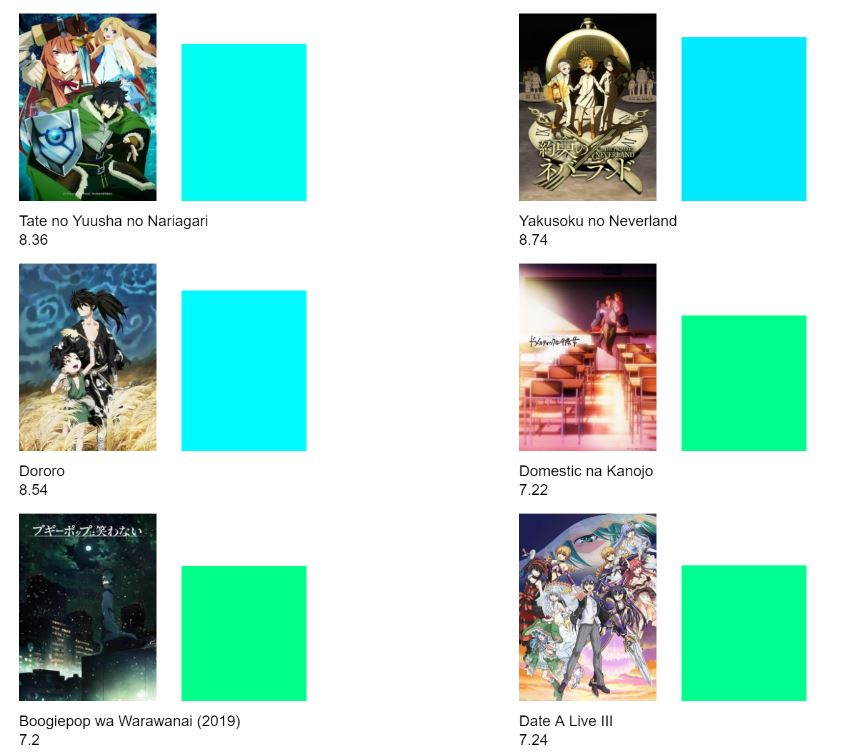
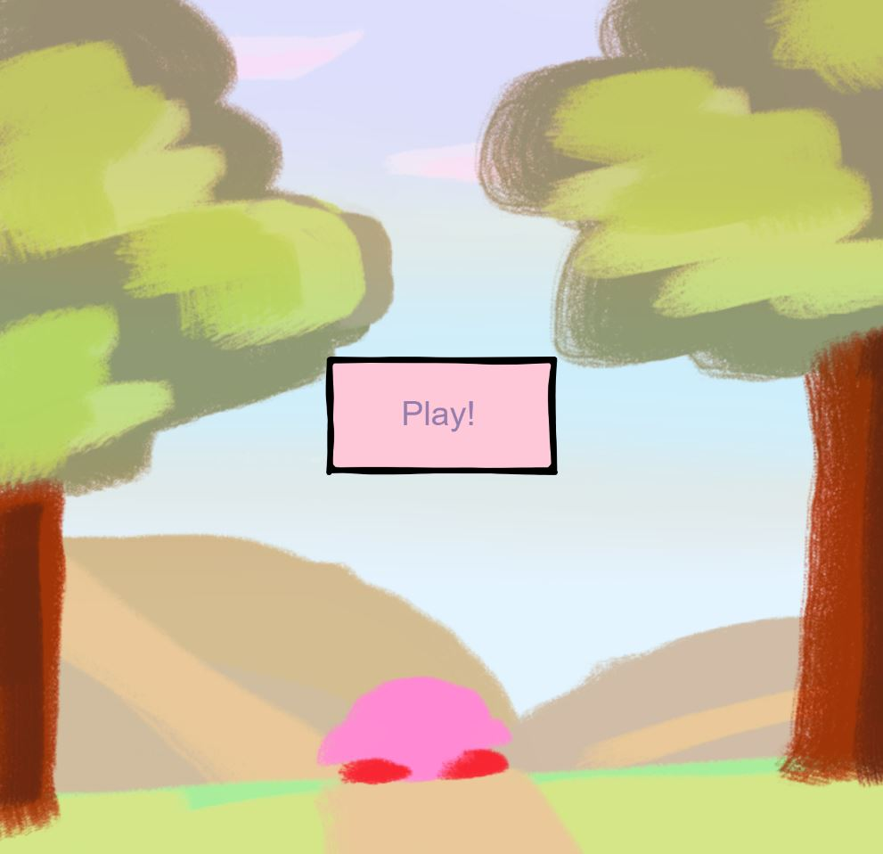

Fate Grand Order is a mobile game I play almost everyday. These characters are from the game. This game is similar to a lottery where you have to save or spend money to get the character you want and it is not 100% guaranteed that the player will get the character they want. The code can be found here.
This petal clock consist the 24 hour clock, 12 hour clock, 60 minutes clock,
and 60 seconds clock. After every 60 seconds past, the color of the 60 seconds will change.
The code can be found here.

This is a series of animes that aired in Winter 2019. I used an API to create the ratings of each animes.
The code can be found here.

I created a mini game where the player will interact with Kirby by clicking on the icons to fill the affection bar
located on the top right corner.
The code can be found here.
Home